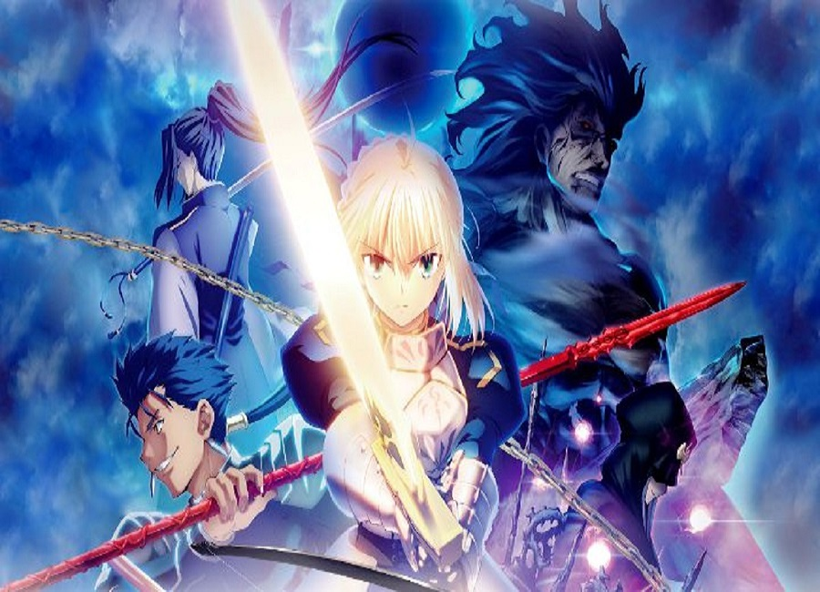
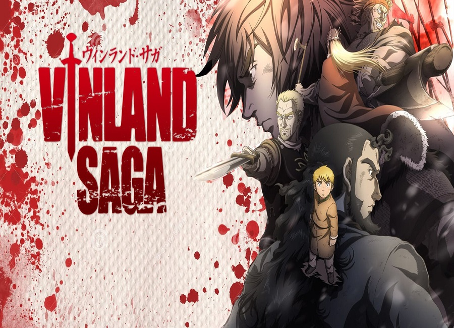
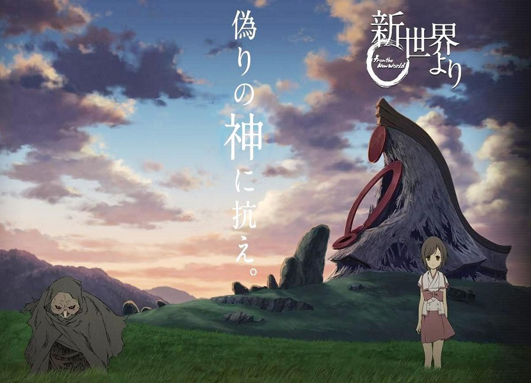

Nel tempo libero mi piace guardare anime, ovvero serie animate giapponesi che possono essere di vario genere, dalla serie più cruenta a quella più comica.
Questo mio passatempo è nato circa alla fine della terza media, quando vidi la pubblicità di un gioco tratto, appunto, da un anime.



FATE SAGA
E' un anime fantasy di stampa Seinen(ovvero indirizzato a un pubblico più maturo). Vi sono 7 maghi scelti dal Santo Graal che evocano un famiglio,detto Servant, che combatte per il mago che lo ha evocato, detto Master, contro gli altri 6 maghi per conquistare il sSanto Graal che è in grado di avverare qualsiasi desiderio.
E' uno dei miei anime preferiti per vari motivi, ovvero la colonna sonora, le animazioni e la trama stessa, piena di colpi di scena. L' unico suo difetto è che avendo molte serie è difficile avere un ordine preciso con cui guardarlo.
VINLAND SAGA
Vinland Saga è un anime storico seinen composto da 24 episodi. La trama ruota intorno a Thorfinn,un vichingo, che vuole vendicare la morte di suo padre, ucciso da un capo di una banda mercenaria vichinga. Thorfinn si unirà alla stessa banda per poter essere a stretto contatto con l'assassino di suo padre.
Di questo anime mi sono piaciuti molto i disegni molto dettagliati e il come nessun personaggio è buono o malvagio, hanno tutti i propri motivi per essere quello che sono.
SHINSEKAI YORI
Shinsekai Yori è un anime horror psicologico seinen. E' ambientato nel 3000 circa, in un mondo in cui gli umani sono in grado di utilizzare la telecinesi. Fin dai primi episodi è possibile notare il come la loro società è solamente in apparenza perfetta e andando avanti con la serie si scoprono sempre più retroscena oscuri.
Mi è piaciuto sia per la trama, con molti colpi di scena, che per i disegni, perchè hanno un tratto molto particolare con colori molto vivaci e accentuati.